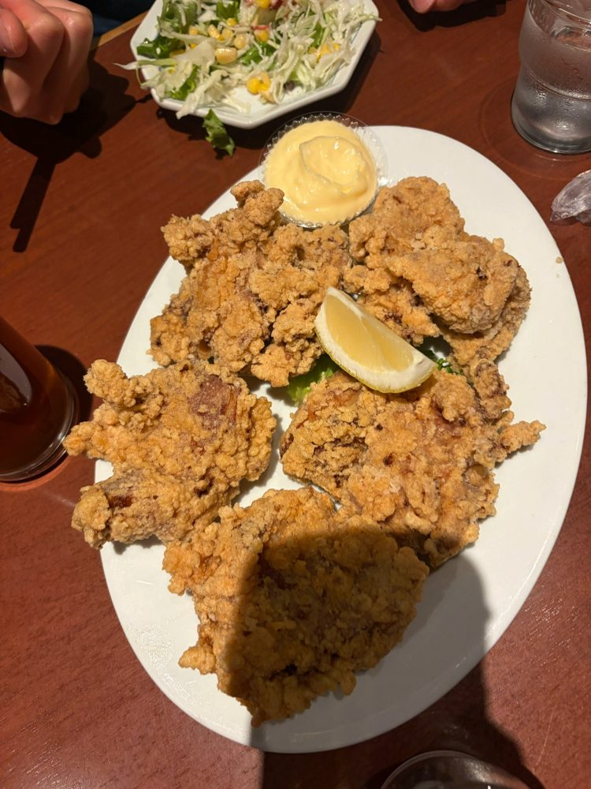
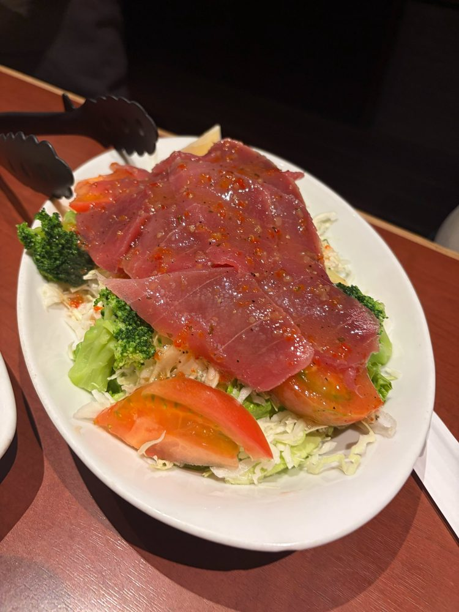

Today I want to show you one of my favorite local restaurants in Ibaraki. The rule here is simple: everything is giant.
Karaage bigger than your hand

Look at this karaage (Japanese fried chicken). This is not one plate for a party. This is one order! Each piece is as big as a hand. The outside is super crunchy, and the chicken inside is juicy. It comes with lemon and a little cup of mayonnaise.

One order. Five pieces. Each one bigger than your hand.
Even the salad is huge

We also ordered a tuna salad. I expected a small side dish… but it was a mountain! Thick slices of red tuna on top of cabbage, tomato and broccoli, with a little spicy dressing. Another salad came with octopus, corn and mayonnaise. We could not finish everything 😂
Why I love it
- It is a real local place, full of people from the area. No tourists at all.
- The portions are crazy, but the prices are not. About ¥1,000–2,000 per person is normal here.
- It is a family-style izakaya, so you can come for dinner, not only for drinking.
Where is it?
This one is a little secret 🤫 It is in the countryside, and it is easiest to go by car. I put the name, the address, my favorite dishes and tips in Kaho’s Secret Restaurant List, my guide to the places I really love to eat in Ibaraki.
Come hungry. Really hungry.